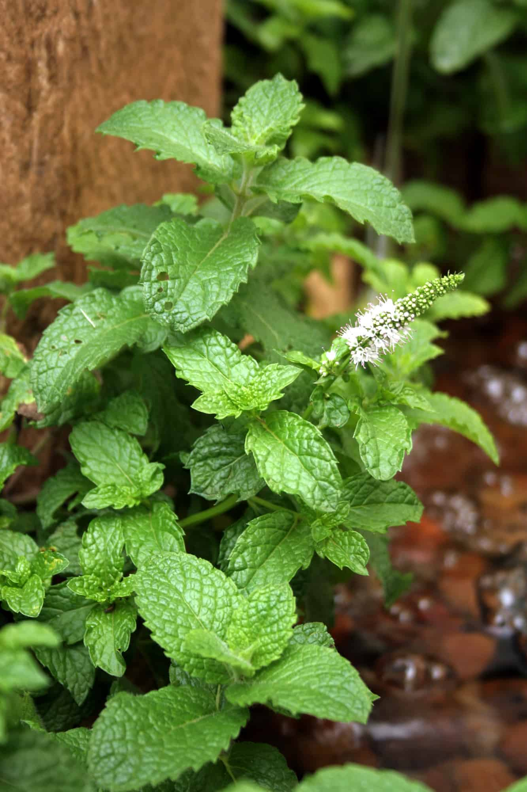
Mint
Mint is easy to grow and there are many different types, offering an array of exciting and unusual flavours, from traditional peppermint to lime mint or chocolate mint and many more. Mint thrives in most soil types, in sun or light shade, and usually forms large leafy clumps up to 1m (3.3ft) tall and wide.You can use mint in all kinds of dishes, including salads, sauces, pesto and desserts. You can scatter it over buttered new potatoes or peas, add it to ice creams, smoothies and cocktails, or make it into tea.
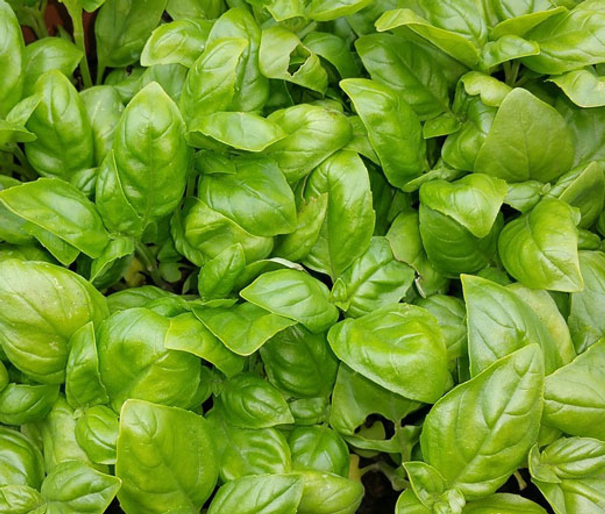
Ocimum Basilicum
Originating in tropical Asia, sweet basil is the classic culinary herb of Mediterranean and Southeast Asian cuisines. Many cultivars exist, selected for fragrance, flavor, color and size. Widely cultivated commercially and in kitchen gardens, sweet basil may occasionally escape, though it is likely ephemeral near sites of cultivation.Basil also has many medicinal uses, including as an anti-inflammatory to help with general pain and digestive disorders. It also contains antibacterial properties that can be used to help with wounds and infections.
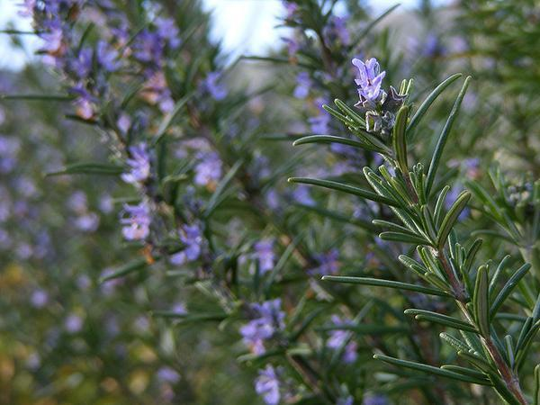
Salvia Rosmarinus
Rosemary (Salvia rosmarinus) is an herb that has been traditionally used as an anti-inflammatory and analgesic agent, and currently is being studied for anti-cancer and hepatoprotective properties. Rosemary also has been reported to be an effective food preservative due to its high anti-oxidant and anti-microbial activities. These properties allow rosemary prevent microbial growth while decreasing food spoilage through oxidation.
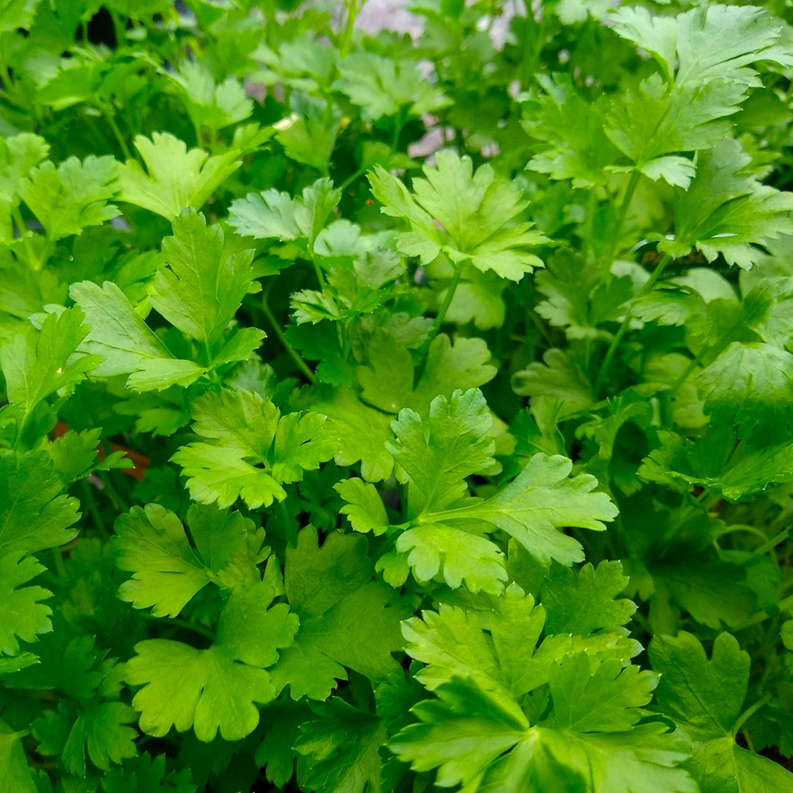
Petroselinum Crispum
Parsley (Petroselinum crispum) is an herb native to the Mediterranean that is grown worldwide. It's widely used in foods and also as medicine.Parsley contains vitamins B1, B2, C, and K. Oils extracted from parsley contain chemicals that might help stimulate the appetite, improve digestion, and have laxative effects.
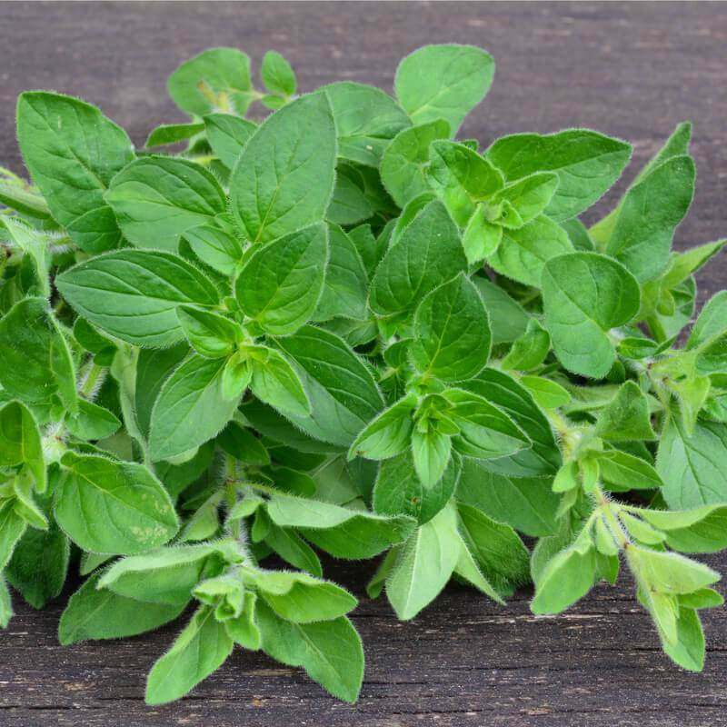
Origanum Vulgare
Oregano (Origanum vulgare) is an herb used to flavor foods. It is considered safe in common food amounts, but has little evidence of health benefits.Oregano has olive-green leaves and purple flowers. It is closely related to other herbs, including mint, thyme, marjoram, and basil. Oregano contains chemicals that might help reduce cough. Oregano also might help with digestion and with fighting against some bacteria and viruses.
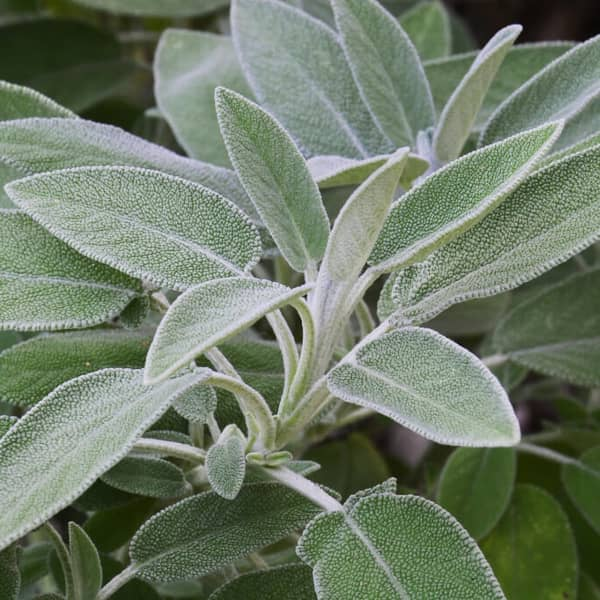
Salvia Officinalis
In folk medicine, Salvia officinalis has been used for the treatment of different kinds of disorders including seizure, ulcers, gout, rheumatism, inflammation, dizziness, tremor, paralysis, diarrhea, and hyperglycemia. In recent years, this plant has been a subject of intensive studies to document its traditional use and to find new biological effects.
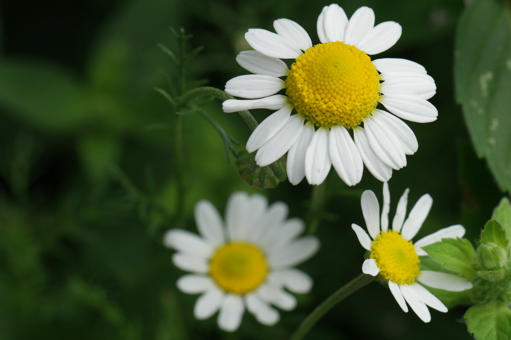
Matricaria Chamomilla
Matricaria chamomilla L. is a famous medicinal plant distributed worldwide. It is widely used in traditional medicine to treat all kinds of diseases, including infections, neuropsychiatric, respiratory, gastrointestinal, and liver disorders. It is also used as a sedative, antispasmodic, antiseptic, and antiemetic.
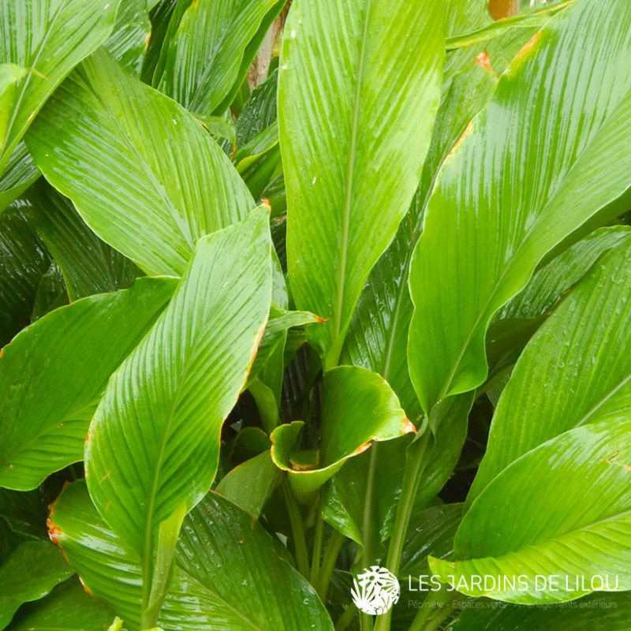
Curcuma Longa
Turmeric (Curcuma longa) has been used for 4,000 years to treat a variety of conditions. Studies show that turmeric may help fight infections and some cancers, reduce inflammation, and treat digestive problems.
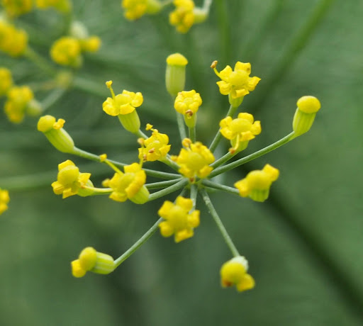
Foeniculum Vulgare
Foeniculum vulgare Mill commonly called fennel has been used in traditional medicine for a wide range of ailments related to digestive, endocrine, reproductive, and respiratory systems. Additionally, it is also used as a galactagogue agent for lactating mothers
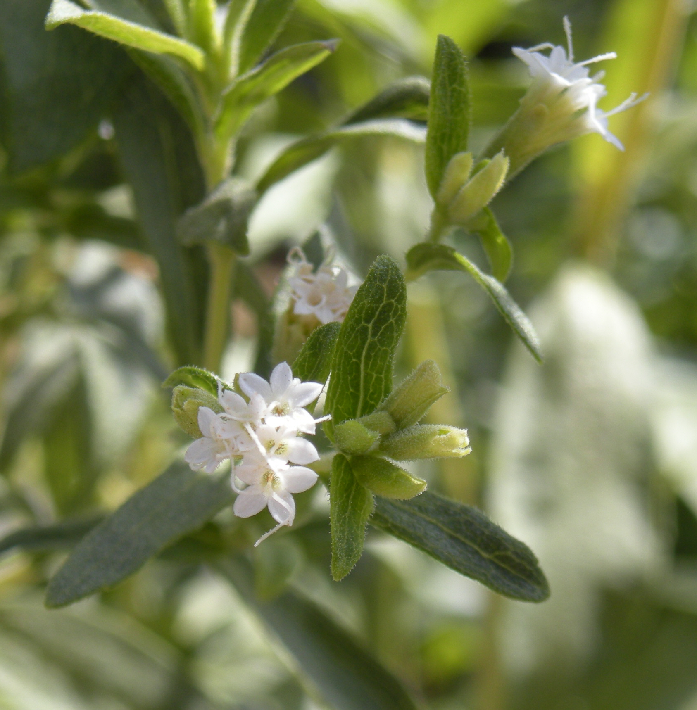
Stevia Rebaudiana
Stevia extract is a great alternative for synthetic sweeteners being approximately 200 to 300 times sweeter than sugar.Many studies have shown that Stevia leaf preparations as a natural non-calorie sugar substitute is not only safe for people with diabetes, high blood pressure, and obesity but also can be used for the treatment of these diseases or prevention of their complications
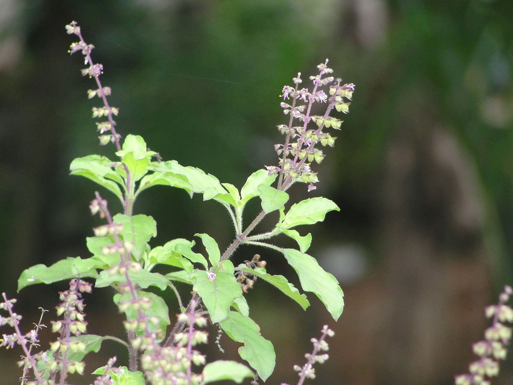
Ocimum Tenuiflorum
Holy basil (Ocimum tenuiflorum) is a plant that is native to India. It is commonly used in the traditional Indian medicine system, Ayurveda.Holy basil is sometimes called "hot basil" because of its peppery taste. Chemicals in holy basil are thought to decrease pain and swelling. They also might lower blood sugar in people with diabetes. Holy basil oil might act as an antioxidant.People use holy basil for anxiety, stress, diabetes, high cholesterol, and many other conditions, but there is no good scientific evidence to support any of these uses.
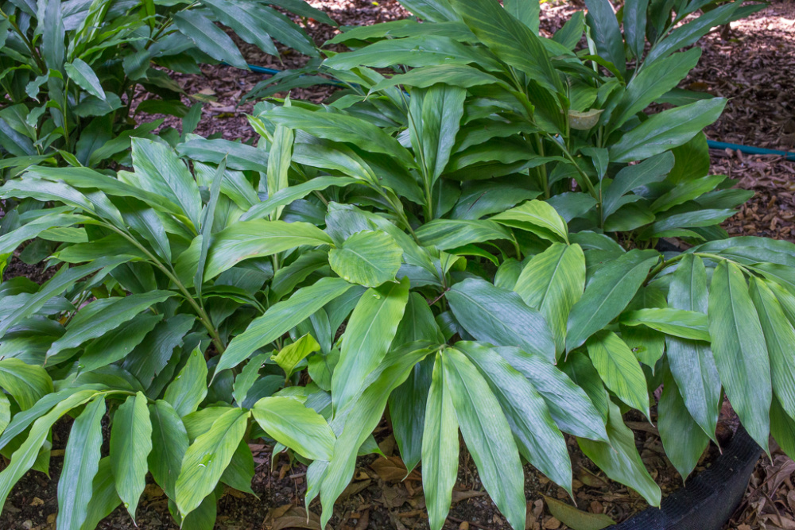
Elettaria Cardamomum
Elettaria cardamomum commonly known as cardamom, is widely used in India, Pakistan, Burma and Sri Lanka as a food and also as a vegetal drug for the treatment of several diseases including, among others, diarrhoea, dyspepsia, vomiting, and cardiovascular diseases
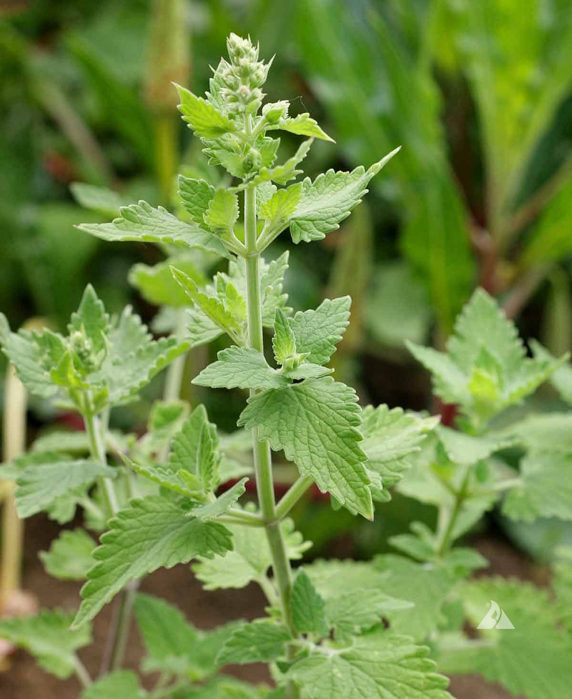
Nepeta Cataria
Catnip, (Nepeta cataria), herb of the mint family (Lamiaceae), noted for its aromatic leaves, which are particularly exciting to cats. Catnip is commonly grown by cat owners for their pets, and the dried leaves are often used as a stuffing for cat playthings. The herb is native to Eurasia and is used as a seasoning and as a medicinal tea for colds and fever in some places
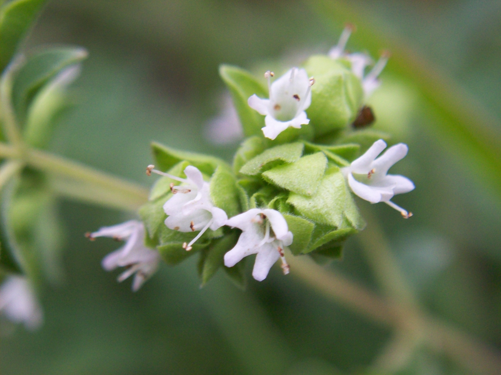
Origanum Majorana
Origanum majorana, is an aromatic and medicinal plant distributed in different parts of Mediterranean countries. This species is widely used in traditional medicine for the treatment of many diseases such as allergies, hypertension, respiratory infections, diabetes, stomach pain, and intestinal antispasmodic.
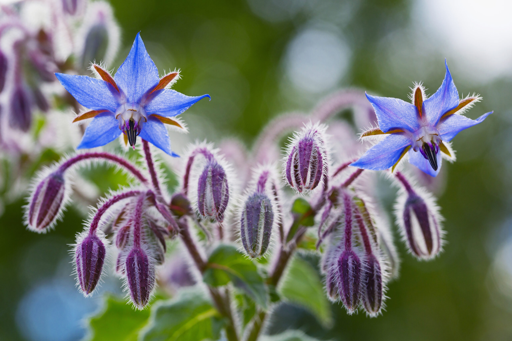
Borago Officinalis
In traditional medicine, borage is used as a sedative and a diuretic, and as a treatment for seizures and kidney disease.Borago is also used for a hormone problem called adrenal insufficiency, for "blood purification," to increase urine flow, to prevent inflammation of the lungs, as a sedative, and to promote sweating. Borage is also used to increase breast milk production and to treat bronchitis and colds.
Herbs and Medicinal Plants Details
| Plant Name |
Growth Size |
Sunlight Needs |
Watering Schedule |
| Ocimum basilicum |
1-2 ft tall |
Full Sun |
Moderate |
| Salvia rosmarinus |
2-4 ft tall |
Full Sun |
Low |
| Petroselinum crispum |
1-2 ft tall |
Partial Shade |
Moderate |
| Origanum vulgare |
1-2 ft tall |
Full Sun |
Low |
| Salvia officinalis |
1-3 ft tall |
Full Sun |
Low |
| Matricaria chamomilla |
1-2 ft tall |
Full Sun |
Moderate |
| Curcuma longa |
2-3 ft tall |
Partial Shade |
Moderate |
| Foeniculum vulgare |
4-6 ft tall |
Full Sun |
Low |
| Stevia rebaudiana |
1-3 ft tall |
Full Sun |
Moderate |
| Ocimum tenuiflorum |
1-2 ft tall |
Full Sun |
Moderate |
| Elettaria cardamomum |
6-10 ft tall |
Partial Shade |
Moderate |
| Nepeta cataria |
1-3 ft tall |
Full Sun to Partial Shade |
Moderate |
| Origanum majorana |
1-2 ft tall |
Full Sun |
Low |
| Borago officinalis |
1-3 ft tall |
Full Sun |
Moderate |
| Bayberry |
6-10 ft tall |
Full Sun |
Low |